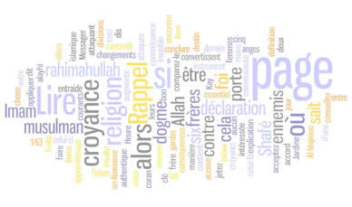

Au nom d’Allah le Clément, le Miséricordieux, Louanges à Allah.
Répertoire des mots

A
- ’âbed (عَبْد) : l’homme pieux.
- abrâr : les justes, autre degré de la hièrarchie des Saints.
- abû Bekr-ı Sıddîk (radiallahu anh) : Premier Calife de l’Islâm.
- achoûra ( عاشوراء ) : le dixième jour du premier mois lunaire de muharram.
- adâb (أَدَب ) : la bienséance dans le comportement avec Allâhu taâlâ et avec autrui.
- adhân (أذان ) : l’appel à la prière.
- adhkâr : invocations, par exemple les invocations à dire le matin et celles du soir
- adilla-i char’iyyâ : Les quatres sources où se basent les règles de l’Islâm; Le Livre (Qur’ân al-karîm) la Sunna, qıyâs al-fuqahâ et ijmâ al-umma.
- ahl : peuple, membre.
- ahl-i Bayt (أهل البيت ) : Les proches parents du prophète.
- ahl al-Kitâb أهل الكتاب : (gens du livre) juifs et chrétiens
- ahl-i sunna (wâ jamâ’at) : Les bons musulmans qui suivent sahâbatal-kirâm (Compagnons de Muhammad aleihissalâm). Ils sont appelés aussi les Musulmans Sunnites. Un musulman d’ahl-i sunna s’adapte à l'un des quatre madhhabs. Ils sont Hanafite, Mâlikites, Chafi’ite et Hanbalite.
- ahkâm : principes, essentiels règles.
- ahkâm al-char’iyya : principes de l’Islâm.
- ahzâb : groupe, partie
- 'aïd : Ce mot signifie "fête" en français. En islam, il existe deux fêtes : "L’Aïd el fitr", ou "Aïd es-Seghir" fête de la rupture du jeûne du mois de Ramadan, et "l’Aid el Adha", ou "Aïd el-Kebir" fête du sacrifice, le jour où les musulmans égorgent un mouton ou agneau qui rappelle le sacrifice d'Abraham et qui marque la fin du pèlerinage (hajj).
- akhlaq : en rapport avec les moeurs, la morale.
- akhira : la vie dernière, future, par opposition à la vie de ce monde, l'ici-bas ou dunyâ.
- Allah : le nom de Dieu en arabe.
- âlam: le monde, celui d’ici-bas et celui de l’au-delà (les deux mondes).
- ’âlim (pl.ulamâ): savant en Islâm; savant en matière religieuse (ou scientifique).
- allâma : érudit, savant de haut degré.
- 'amâl salihat : bonnes oeuvres
- amân : sécurité ou acte de clémence
- amin (Amîn) : Expression signifiant "Ô Allah, accepte notre invocation"; l'introduction se compose habituellement de louanges et de glorification à Allah. Littéralement cela veut dire : quoi qu'il arrive après. Il est généralement traduit comme : alors après.
- amîr : commandant, gouverneur.
- amîr-al-Mu’minîn : Calife des musulmans.
- amr : les commandements positifs divins.
- ansars : Compagnons de Rassouloullah “sallallahu aleihi wa sallam” qui étaient à Médine ou à sa proximité.
- aql : l’intelligence, la raison.
- aquîdah : dogme, foi, croyance..
- arafat : Le mont Arafat est une colline qui se situe à l’est de la Mecque. Pendant le pèlerinage, les musulmans doivent s’y rendre obligatoirement le 9 du mois de Dhu al Hijja. Cet endroit est très important car le Prophète Mohammed
 y a fait son sermon d’adieu et Adam et Eve se sont rencontrés à cet endroit lorsqu’ils ont été expulsés du Paradis.
y a fait son sermon d’adieu et Adam et Eve se sont rencontrés à cet endroit lorsqu’ils ont été expulsés du Paradis. - ’ârıd (pl. awârid) : ce qui survient inopinément, pouvant engendrer le trouble et distraire l’attention.
- ’ârif: le connaissant.
- assalamu alaikum : le salut entre croyants (que la paix soit sur vous) et on répond : Wa 'alaikumus salam
- asr : prière de l'après midi
- al-asharatoul moubashsharoun : les dix croyants à qui Allah a annoncé qu'ils iraient au paradis
- astaghfirullah : je demande pardon à Allah
- ’asl (pl. usûl) : principe, origine
- âthâr : propos rapportés par les compagnons et tâbi'înes.
- a'uzu billahi minashaitânir rajîm : je cherche la protection d'Allah contre le diable maudit
- awliyâ أولياء pluriel de Walîy : saint musulman.
- Awra, عورة : Les parties du corps à cacher.
- ayyam al bid : les jours blancs, 6 jours de jeûne facultatif dans le mois qui suit Ramadhan
- âyat ( آية ), pl. āyāt signes( آيات) : verset du Qur’ân al-karîm ou Signe
B
- bachar : genre humain.
- banî Isrâ'il : les enfants d’Israel.
- banû : descendants de, tribu
- baraka : bénédiction
- barzakh : séparation où l'eau ne se mélange pas dans le saint coran, peut être le monde des morts.
- bassar : la vue.
- bassîra : la clairvoyance.
- bâtin : Ce qui est intérieur, caché par opposition à ce qui est extérieur, manifeste (zâhir).
- bidâya (pl. bidâyât): début, commencement.
- bay'ah : serment d'allégeance
- basmala : Terme désignant la formule de consécration "Bismillahi Ar-rahman Ar-rahim" (communément traduite par "Au nom de Dieu, le Tout-Miséricordieux le Tout compatissant").
- ben : fils de.
- bid'a : innovation.
- bint : fille de.
- birr : bonté.
- bismillah : [ Au nom d'Allah ] Invocation utilisée couramment par le croyant en débutant une activité. Cette formule rituelle rythme la vie du musulman.
- bay'at : serment d'allégeance.
- bayt al-mâl : caisse de la Zakat.
- bismillahir rahmanir rahim : Au nom d'Allah le miséricordieux le tout miséricordieux
C
- cha`abân (arabe : شَعبان ) est le huitième mois du calendrier musulman.
- cadi voir Qâdi
- calife voir à khalifa
- chafâ’at: intercession.
- chafa' : prière surrérogatoire ayant un nombre pair de prosternations célébrée après la prière canonique de Isha suivie de la prière de Witr.
- chahada: profession de foi, témoignoge, martyre.
- châm : Liban, Syrie, Jordanie et Palestine
- charî’at ou charia ou sharia: la Loi divine, révélée dans le Qur’an al-karîm, complétée par la Sunna et le consensus de la Communauté, qui régit la vie de tout bon musulman. Sa pratique est la base de toute vie spirituelle qui pour être authentique et féconde, droit unir indissolublement charî’at et haqîqa.
- charh : commentaire.
- charte : fait préalable ou condition nécessaire à un acte, mais pas suffisant.
- chaytân : diable
- chawwal (arabe : شَوّال ) est le dixième mois du calendrier musulman. Il est marqué par l'Aïd
- cheik, chaykh, cheikh ou sheikh (maître; vieillard; sage) , chez les Arabes, un homme respecté en raison de son grand âge ou de ses connaissances scientifiques, religieuses, philosophiques. Ce titre correspond au sage.
- chérif شريف : honnête ou nassab chérif: descendant de Mohammed.
- chiisme, (chî‘a, chiite, chiisme) شِيعَة : le courant chiite (littéralement : « disciple ; partisan »)
- chirk : l’associationnisme, péché majeur contre l’unicité divine.
- choura شُورَى : concertation, prise de décision en commun.
- chubha : le doute et aussi ce qui est de licité douteuse, dont on doit s’abstenir.
- chukr : la gratitude.
D
- dâf : tambourin
- da'iyah : prédicateur musulman
- dajjâl : antéchrist, menteur, qui sème le désordre
- da' wah : prédication
- dalâla(t) : hérésie.
- da'if : faible
- dharourâh : nécessité vitale.
- dhât : l’essence, par opposition aux attributs (siifât).
- dhimmi : (ahl al dhimma) non musulman vivant chez et sous la protection des musulmans et qui leur acquitte un tribut nommé jiziyah.
- dhikr : se rappeler Allâhu ta’âlâ, avoir Allâhu ta’âlâ présent à l’esprit et au coeur.
- dhû'l-Fikar, (celle qui à une épine) ذو الفقار : nom de l'épée à deux pointes que Mohammed a donné à `Ali lors de la bataille d'Uhud
- dhû'l-Hijja, (mois du pèlerinage) ذو الحجة : nom du dernier mois du calendrier musulman, mois sacré du grand pèlerinage.
- dhû'l-Kifl, (celui qui à une part double) ذو الكفل : prophète, cité dans le Coran
- dhû'l-Qarnân (celui qui a deux cornes) ذو القرناء : personnage cité dans le Coran
- dhû'-n-Nûn, (celui au poisson) ذو النون : personnage cité dans le Coran
- dhû'n-nûrayn, (celui qui a deux lumières) ذو النورين : un surnom de `Uthman dont les filles se sont mariées aux prophètes
- dîn : la religion
- diya (le prix du sang) دية : prix du sang pour un homicide involontaire
- djihad, ou Jihad
- djinn, jinn جنّ : génies; démons; djinns.
- djizyîa, voir Jiz'ya
- dirham : monnaie
- do'â' : invocation
- dunyâ: Ce bas monde, par opposition à âkhira.
E
-
eid : fête : Eid ul fitr à la fin de ramadan et Eid ul Adha le dixième jour de dhull al hijja.
- envoyé ou messager
F
- fadjr ou fajr : prière de l'aube
- falâh (bonheur) فلاح : réussite , bonheur , succès
- faqîh (pl. fuqahâ) : savant, âlim en fıqh.
- faqr : la pauvrété.
- fard : obligation; précepte religieux prescrit formellement aux croyants; choses qu’Allâhu ta’âlâ ordonne clairement dans le Qur’an al-karîm.
- fassad :
- fâssiq : pervers, débauché, pécheur
- fath : l’un des cent quatorze chapitres du Qur’an al-karîm.
- fatwah : sentence juridique ou religieuse donné par une autorité religieux.
- fıqh : science de Droit Religieux Islâmiques; connaissances qui indiquent ce qu’il faut faire et ce dont on doit se méfier; les commandements et les interdictions.
- firâsat : la sagacité.
- fi sabili llah : sur le chemin de Dieu
- fitnah : soit un état général de la situation, soit une personne qui met les gens en désaccord (zizanie), soit un situation qui peut dégrader un état/ tentation.
- fitrah : inclinaison naturelle, nature croyante innée. [ nature primordiale ] Nature profonde de l'homme, tel qu'il fût créé par Dieu en Adam. Etat d'harmonie entre l'homme, la création et Dieu. L'Islam se défini comme la religion de cette norme primordiale. Selon la tradition musulmane, les enfants naissent en harmonie avec la nature profonde et c'est l'éducation qui fait d'eux des juifs, des chrétiens, etc.
- fur’û-i din: branche des connaissances religieuses; ibâdat que l’on doit rendre avec le coeur et le corps.
- furqân : preuve, séparation entre le bien et le mal
- futuwwah : la générosité du coeur.
G
- gazâ : guerre sainte.
- Jibril: l'ange Gabriel
- ghousl (Ghossl) (غُسْل ) : Ablution "majeure" qui consiste en un lavage complet du corps. Cette ablution est notamment nécessaire pour le croyant en état de janâba(impureté majeure) désirant effectuer la prière, pour la femme en période de menstrues et pour toute personne qui embrasse l'Islam. A sa mort, le musulman doit être entièrement lavé.
- ghaflah : la négligence, l’insouciance.
- ghayb : l’Invisible.
- ghayba : l’absence.
H
- habl : lien
- hadath (évènement ; incident) حدث : évènement provoquant une impureté
- hadath al asghar , (impureté mineure), حدث الأصغر : impureté qui nécessite le recours aux petites ablutions
- hadath al-akbar, (impureté majeure), حدث الأكبر : impureté qui nécessite le recours aux grandes ablutions.
- hadd : peine impérative.
- hadith ou hadîth : est un terme arabe qui désigne des paroles ou actes de Mohamed saws considérés comme des exemples à suivre par les musulmans.
- hadith qudsi : type de hadith divin : citations d'Allah révélées au prophète, mais qui ne font pas parti du coran.
- hâfiz (pl. houffâz) : apprend par coeur le coran
- hajj ou hadj: pélerinage à la Mecque.
- hâdjah : besoin.
- hâl : état
- halâl ou halal ou hallal : ce qui est licite
- hanafite : quelqu’un qui suit la madhhab établie par Imâm-ı a’zam Abu Hanîfa, l’une de quatre école du droit musulman sunnite.
- haqîqa : la Réalité.
- haqq : le Réel, Allâhu ta’âlâ.
- harâm ou haram : action ou quelque chose défendues de faire par la religion; illicite, interdit.
- hassad : envier
- hassan : beau, bon
- hayâ : la pudeur.
- hayât : la vie.
- hayd : menstrues
- hédjaz : Région sur la péninsule arabe.
- hibah : don
- hijrî : de l’Hégire.
- Hijrah : hégire, migration de Mohammed et de ses compagnons de La Mecque à Médine
- hijâb : le voile.
- hikmat : la sagesse.
- himmat : la préoccupation.
- hira (la grotte) est l'endroit où le Prophète Mohamed saws a reçu ses premières révélations d'Allah (Dieu) à travers l'ange Gabriel pendant le mois de Ramadan. La grotte se trouve sur le sommet de Jabal al-Nour dans la région Hedjaz de l'actuelle Arabie saoudite à peu près à 4 km au nord-ouest de la Mecque.
- hizb : désigne 1/60 du Coran c’est-à-dire la moitié d'un juz et aussi les ennemis qui se sont ralliés contre le prophète à Médine.
- houda : bonne direction
- hour : les femmes vierges du paradis
- hubb : l’amour.
- hujja : la preuve, l’argument.
- hukm : jugement
I
- ibâda(t) عبادة : culte qu’on doit pratiquer du coeur ou avec le corps.
- ibâra : l’expression clair et adéquate.
- Iblîs ou Eblîs إبليس ; Le démon, c'est le nom du djinn qui refusa de se prosterner devant Adam sur l'injonction de Dieu.
- îbtilâ : test
- I'cha ou Isha : prière du soir
- 'idda : période d'attente de trois mois post divorce
- idhtirâr : nécessité extrême.
- iftâr : repas de rupture du jeûne.
- ihram : Ce mot arabe signifie "être en état de sacralisation" ; Durant toute la période du hajj, les pèlerins devront être en état d’ihram : faire les grandes ablutions, porter deux étoffes non cousues pour les hommes, prononcer la formule de la Talbiya et observer des interdits comme ne pas se couper les ongles et les cheveux, ne pas avoir de relations sexuelles ni faire de demande en mariage, et ne pas chasser.
- ihsân : perfection de la croyance où on craind Dieu comme si on le voyait et si on ne le voit pas on sait que Lui nous voit.
- ijmâ’ : unanimité, consensus.
- ijtihâd : le fait de faire effor; capacité à comprendre les sens cachés, tels que les commandements, interdictions dans le Qur’an al-karîm; un effort personnel de réflexion.
- ikhlâs : la sincérité; la qualité, l’attention ou l’état de faire tout seulement pour l’amour d’Allah.
- ilâhi : divin.
- ilhâm : l’inspiration.
- ilm (pl. ulûm) : la science, qui repose sur des preuves et enlève l’ignorance.
- ’imâm : celui qui a pour mission d’éclairer et de guider les autres, dirige la prière.
- imâm de madhhab : nom donné aux docteurs sunnites qui fondèrent les quatre école-juridiques de l’Islâm.
- îmân : foi, croyance en tout ce qu’Allâhu ta’âlâ nous a ordonné croire par l’intermédiaire de Son Prophète bien-aimé (sallallahu aleihi wa sallam).
- Injîl : l'Evangile ou la Bible
- inna lillahi wa inna ilahi raji'un : nous sommes à Allah et c'est à Lui que nous retournerons (se dit quand on apprend la mort de quelqu'un)
- in sha' allah : si Allah le veut (à dire si on veut faire quelque chose)
- iqamah : deuxième appel à la prière
- irâda: la volonté.
- Islam : religion d'Allah
- Isnâd : chaîne de transmission d'un hadith ( personnes qui rapportent un hadith)
- isrâ' (voyage nocturne) : le voyage nocturne du prophète entre la Mecque et l'Aqsa à Jérusalem.
- istighfar : demande de pardon
- i’tiqâd: foi, croyance.
- ittilâ: l’information.
J
- janabah : impurté rituelle
- jahannam : enfer
- jahl : ignorance
- jahiliyyah : période tribale précédant l'islam
- janazah : cortège funèbre
- jannah : paradis
- jamâ’a(t): communauté :; tous les croyants dans une mosquée.
- jazakallahu khayran : Qu'Allah te récompense par le bien
- jibril (Jibrîl): [ Gabriel ] Nom de l'ange qui a transmis au prophète Mohammed (sur lui la prière et la paix) le message de l'Islam par la révélation du Coran.
- jihad : lutte, effort
- jilbâb : longue robe ou djelaba
- jinn ou djinn : créature faite à partir d'un feu pur
- jziyah : tribut, impôt payé par les dhimmi (non-musulmans).
- juz (1/30 du Coran) جزء pl. ajzā' أجزاء : le Coran divisé en trente parties pour sa récitation en un mois. Un signe particulier marque le début de ces divisions ۞
K
- Ka'bah : En arabe, cela signifie « cube ». La Ka'bah a été construite par le Prophète Adam (paix sur lui), et fut reconstruite par le Prophète Ibrahim et son fils Ismaël (paix sur eux).
C’est autour de la Ka’bah que les pèlerins effectuent les sept tours du tawaf, également appelés la circumambulation. - kaba'ir : grand péché
- kachf : le dévoilement.
- kâfir : infidèle, incrédule.
- kalâm : théologie; Parole.
- kalîmullah : Celui qui entend la parole d’Allâhu ta’âlâ.
- kamâl : perfection, exellence.
- kâmil : parfait.
- karâmat : l’honneur dont Allâhu ta’âlâ gratifie.
- khalifa : dirigeant des musulmans et du Khilafa
- khilafa : Etat islamique dont les lois suivent la Sharia
- khâliq : Créateur.
- khalq : nom collectif désignants les hommes, créatures d’Allâhu ta’âlâ.
- khoutba : sermon de Vendredi.
- khuchû : l’humilité.
- khuluq (pl. akhlaq) : le caractère, les bonnes moeurs.
- khurûj : Exode.
- khusûma : la querelle.
- khutbah : sermon
- kufr : non croyance et Kuffar au pluriel et kafir pour un non croyant
L
- la hawla wa la quwwata illa billah : pas de force ni de puissance sans la permision d'Allah
- la ilaha illallah : il n'y a pas d'autre Dieu qu'Allah
- laghw, (futilité) لغو : conversation inutile, futile
- la'în, ﻟﻌﻴﻦ : maudit, réprouvé
- la'nah, la'nat لعنة ; malédiction
- layla al-Qadr, (nuit du destin) ليلة القدر : vers la fin du mois de Ramadan
M
- ma cha' Allah : Dieu l'a voulu
- madhhab : Ecoles juridico-islamiques.
- madînah : ville du prophète
- maghrib : prière du coucher
- mahdi مهدي : homme guidé par Allah qui viendra vers la fin des temps
- mahr : la dot de la mariée
- mahram : personne avec qui on ne peut pas se marier
- majlis مجلس : endroit où l'on s'assied , parlement , réunion
- makrûh : action, chose interdite de faire par les hadiths.
- maktoub : écrit
- mala'ika ملائكة : ange
- ma’nâ : le sens, la signification, ce que l’on vise.
- mansoûkh (مَنْسوخ ) : énoncés du qur'an et de la sunna qui sont abrogés.
- maqâm : la demeure, la station.
- marfu' : une catégorie d'hadiths où le narrateur attribut le texte au prophète
- masjid (مسجد) : la mosquée ou le lieu où l'on se prosterne.
- masjidal-Harâm : la grande mosquée à la Mecque.
- masjid-an-Nabawî : mosquée à Médine.
- ma’siyya : la désobéissance aux commandements d’Allâhu ta’âlâ.
- ma'soum : impeccable, qui ne commet aucun péché.
- mawlânâ مولانا : notre maître
- mawlid ou mawlid an-nabawîy, مولد النبويّ, naissance du prophète, fête qui commémore la naissance de Mohammed.
- mecca : La Mecque en arabe. Ville qui se situe en Arabie Saoudite et où est né le Prophète Mohammed saws C’est en direction de la Mecque que les musulmans prient 5 fois par jour.
- médressa (madressa): collège islamique.
- medina : Médine en arabe. Ville qui se situe en Arabie Saoudite, à environ 495 km de Mecca. Elle s’appelait auparavant Yathrib, c’est là où est enterré le Prophète Mohammed saws.
- messie مسيح : Le Messie (Jésus)
- mihrâb : niche tournée vers la Mecque dans la mosquée.
- mina : Endroit qui se situe entre Mecca et Arafat. Le pèlerin doit y passer au moins 3 nuits ; Il y a trois stèles à lapider à Mina, qui représentent Satan. Cela consiste à y lancer sept petites pierres, en souvenir à Ibrahim (paix sur lui) qui, à plusieurs reprises, lança ces pierres à Satan qui se présentait devant lui pour le dissuader d’accomplir le sacrifice de son fils Ismaîl.
- minbar : tribune, chaire du prédicateur
- minnat : le bienfait, la faveur d’Allâhu ta’âlâ.
- minhaj : méthode, ligne de conduite.
- mi’râdj : L’ascension de Raçoûlullâh.
- misk : la plus agréable odeur.
- mizân: balance, au jour du jugement dernier.
- mosquée ou jâmi" en arabe (جامع ) : lieu de rassemblement
- mouloud, muulud, mouled ou maoulide voir mawlid
- mousshaf (pl. masâhif): exemplaires écrits du Qur'an.
- moudjtahidînes (moujtahid) : savant ayant les compétences requises pour extraire des prescriptions juridiques des références premières.
- Mouzdalifa : Lorsque le pèlerin quitte Arafat en fin de journée, il se rend à la ville de Mouzdalifa pour s’y reposer et y dormir. Après la prière de fajr, le 10e jour de Dhul al hijja, il quittera Mouzdalifa pour se rendre à Mina.
- muadh-dhin : celui qui fait l'appel à la prière
- mubâh : action ou chose ni ordonnée ni défendue de faire.
- muchrik : polythéiste, idolâteur.
- mudarris : professeur, enseignant à l’université ou au médressa.
- mu'adhin : personne qui fait le adhân.
- mufsid مفسد pl. mufsidūn مفسدن : corrupteur
- muftî : docteur de la loi musulmane. (représentant des musulmans)
- mou'awadhatayn : sourates protectrices, les deux dernières du coran protégeant contre le mal et le mauvais oeil.
- muhâjir مهاجر pl. muhâjirûn مهاجرون : éxilé, l’homme qui devint musulman à la Mecque (et en a émigré.)
- muharram محرم : sacré, nom du premier mois du calendrier musulman.
- muhâsaba : l’examen de consience.
- mu’jiza : le miracle des Prophètes “alaihimussalâm”.
- mujtahid : le grand savant capable de faire l’idjtihad.
- mujtahid mutlaq : capable de faire se rapprocher des textes divergents et en tirer la synthèse, élaborer les principes juridiques sans référence à une école particulière (madhhab). Ces compétences sont considérées comme exceptionnelles et rarissimes.
- mujtahid mutlaq muntasib : le même mais dans le cadre d'une école interprétative (madhhab).
- mujtahid fil-madh'hab : dans le cadre d'une école interprétative, capable d'élaborer des réponses juridiques sur des questions nouvelles.
- muhsin : celui qui fait le bien et y excelle
- mu’min : croyant, musulman.
- munâfiq : hypocrite fait croire qu'il est croyant alors qu'il ne l'est pas
- murtad : apostat, renégat.
- mustahab : acte désirable
- mut'ah متعة : le mariage temporaire.
- mutawâtir متواتر : notoire, récurrent, se dit d'un hadith se trouvant à plusieurs reprises avec des chaînes de garants différentes.
N
- nabî: Prophète.
- nasihah : conseil.
- nâfil : facultatif, surérogatoire.
- nâfila: prière surérogatoire.
- nafs : l’âme charnelle.(ego poussant vers le mal et la turpitude)
- nafs ammârah bi sou : qui est incité à faire ce qui est condamné.
- nafs allawama: les croyants ont ce type d'âme plus il nourrit son âme et plus il se rapproche du nafs idéal le nafs moutmainna.
- nafs moutmainna : âme apaisée celle des saints et des prophètes
- nahw نَحْو : grammaire.
- nakîr et munkar, nakīr wa munkar منكر و نكير : Les noms des deux anges qui testent la foi des défunts dans leur tombe.
- namaz: (salât) ; la prière rituelle faite cinq fois par jour.
- nasîha : le bon conseil qu’on doit donner à l’autrui.
- nâsîkh : énoncés du qur'an et de la sunna qui abrogent
- nass : terme général pour un âyat ou hadith.
- na’t : la qualification, la qualité, la description.
- nifaq : hypocrisie, cacher sa mécréance en faisant croire qu'on est croyant.
- nifâs : lochies
- nihâyat la fin.
- nikah : l’acte de mariage islamique.
- ni’mât : la faveur divine, la grâce, le bien.
- niqâb : voile couvrant le visage.
- niyya, niya : Intention droite qui conditionne l'authenticité de tout acte de la vie du musulman.
- nubuwwat : Prophétie.
- nûr : lumière.
O
- oum al mou'minine : mère des croyants (femme du prophète)
- oumma ou umma (أمّ [umm], mère; أمّة [umma], communauté ; nation) désigne la communauté
P
- paradis, janna
- prophète, nabī نبيّ, pl. anbiyā' أنْبياء : prophète.
Q
- qader : destin.
- qâdi : juge
- qadîm : éternel.
- qalb : le coeur.
- qari' : récitateur du coran
- qiblah : direction de la prière qui est la mecque
- qiyam al layl : prière de nuit
- qiyâmat : résurrection
- qiyâs (al fuqahâ) : conclusion faite par un mujtahid en comparant une affaire non-précise à celle qui est citée clairement par les nass ou ijmâ.
- qiyâs-ı mantıqî: syllogisme.
- quds : la sainteté.
- Qur'ân : le saint coran en écriture phonétique
- quraysh : tribu et habitants de la Mecque Communauté Arabe de Quraiche, les ancêtres de notre Prophète “sallallahu aleihi wa sallam”.
- qurb : la proximité.
- qudsi : divin
R
- Rabb : Seigneur, Créateur, Eternel; Allâhu ta’âlâ.
- raçoûl : Envoyé; Messager d’Allâhu ta’âlâ.
- Raçoûlullâh : Muhammed alaihissalâm; le Prophète d’Allah.
- radhiallahu 'anhu ('anha) : qu'Allah l'agrée.
- rajab : septième mois du calendrier musulman, mois sacré.
- rajm : lapidation.
- rak'at : un cycle dans la prière
- ramadan : 9 em mois lunaire
- ramiy : lapider
- rassûl : messager
- riba (Ribât) : Usure qui prend deux formes (L'Islam rejette strictement toute forme d'usure) : - Intérêt sur l'argent prêté (Riba Nasî'a), emprunté, ou déposé sur un compte bancaire à intérêt, - prendre une marchandise de valeur supérieure contre une autre du même genre mais de valeur inférieure (Riba Al Fadl).
- riddat : apostasie
- ri’âya : la vigilence.
- rida : la satisfaction.
- risâlah: [ transmission d'un message ] Ce terme désigne la mission d'un messager de Dieu (rasoul).
- rûh : l’esprit.
- rukhsat : la dispense
- roukn, pl. arkân : pilier
- ruku' : acte de la prière, inclinaison du dos et positionnement des paumes de mains sur les genoux
S
- sabab : les causes, les moyens.
- sabr : la constance, patience, endurance
- sadaqah : charité, aumône
- sahaba : compagnons du prophète, sg. un Sahabi
- sahîh : authentique sert à désigner une catégorie d'Ahadith authentiques
- sa’i : course entre Safa et Marwa : Safa et Marwa sont deux collines entre lesquelles le pèlerin fait 7 allers-retours en souvenir de Hajar (qu’Allah soit satisfait d’elle) qui était seule avec son fils Ismail. Elle courait d’une colline à l’autre pour chercher du secours.
- sajda : prosternation faite dans la prière rituelle.
- Sallallahu 'alaihi wa sallam : que la paix et les bénédictions de Dieu soit sur lui
- Salaf : ancêtre, as-salaf as-salih (les pieux anciens) السلف الصلح
- salâm : paix
- salat (Salah) : prière
- salssabîl : source du paradis
- sawab : récompense.
- sawm : jeûne
- sayyid : seigneur
- shahadah : attestation de foi
- shaytan : le diable (celui qui s'est éloigné)
- shirk ou chirk : association
- sidq : la vérité, la véracité.
- silat rahm : lien de parenté
- sirâh : biographie
- Sirat (As-sirât): [ chemin ] Si le sens littéral de ce mot est "chemin", et qu'il est utilisé pour évoquer le "chemin" de l'homme dans sa vie, ce terme est également utilisé pour désigner le pont que devront traverser les hommes au jour du jûgement et qui enjambe l'enfer en mènant au paradis. Il est décrit comme aussi aiguisé qu'une épée et plus mince qu'un cheveu.
- siwak : batônnet de bois utilisé pour se laver les dents
- sourate (Sûra) : Le Saint-Coran est composé de 114 sourates, ou chapitres. Chaque sourate porte un nom particulier ("Les hommes", "Joseph", etc.) permettant de la reconnaître.
- suhba : la compagnie.
- sujud : prosternation
- sunna : la tradition de Raçoûlullâh. paroles et actes du prophète à suivre
- surûr : la liesse.
T
- tâ’at : l’obéissance.
- tabi'in : adeptes, successeurs des sahabas.
- tafsîr : livre, science d’interprétation du Qur’an al-karîm.explication, éxegèse
- taghut : démon, fausse divinité.
- tahajjud : se réveiller la nuit pour prier
- tahârat : purification
- tajwid et tartil : manière de réciter le saint coran, embellissement
- talâq : divorce
- talbiya : Formule que récite le pèlerin qui se met en état d’Ihram et commence le hajj (ou la Oumra, le petit pèlerinage) C’est cette formule qu’utilisait le Prophète Mohammed saws, à savoir : « Labbayka, allahoumma labbayka labbayka laa charika lak labbayka inna al-hamda wa ni’mata laka wal-moulk la sharika laka »" Me voici, mon Seigneur, me voici. Me voici, Toi qui n’as point d’associé. Louanges, Bienfaits et Royauté t’appartiennent. Tu n’as point d’associé. " Avec la talbiyya, le pèlerin musulman rejette toutes les fausses divinités et proclame qu’il est une créature de Dieu, l’Unique.
- taqlid : imitation.
- taqwâ : la piété, craindre la colère de Dieu et respecter Sa présence.
- tarâwih : prières surrérogatoires pendant les nuits du mois de ramadan
- tasawwouf : soufisme ou mysticisme défini par l’Islâm.
- tasbih, takbir : glorification
- taslîm : la soumission totale.
- tasnîm : source du paradis.
- tawaf : Le Tawâf, qui s’appelle circumambulation en français, consiste à faire 7 fois le tour de la Ka’aba dans le sens contraire des aiguilles d’une montre, en prenant pour départ et arrivée la pierre noire. Il faut être en état d’ablution pur accomplir le tawâf. Il existe plusieurs types de Tawâf.
- tawakkul : s’appuyer sur Allâhu ta’âlâ.
- tawba : la repentance, retour à Allâhu ta’âlâ.
- tawfîq : opportunité de la part de Dieu
- tawhid : unicité, la profession de foi monothéisme, l’unification.
- tayammum : ablutions sèches
- ta’zîm: la révérence.
- thawab : récompenses d'Allah
- thiqah : fiable et digne de confiance
- tilâwah : récitation du saint coran
- Torah : Livre d'Allah révélé à Moïse
- tûfân : déluge
- tûwa : vallé sacrée
U
- ’ubûdiyya : l'adoration.
- ulama ou ulémas : savants en religion, pluriel de Alim
- umma’t : communauté, peuple.
- umrat : petit pèlerinnage
- usûl-i din : la science qui concerne l’apprentissage des connaissances principales de la religion, les règles religieuses, méthode.
V
- verset : Phrase ou groupe de mots composant le Saint-Coran.
W
- wahdaniyya : l’unicité.
- wahy : révélation faite à un Prophète par Allâhu ta’âlâ.
- wajîb : le nécessaire.
- walaa' : loyauté, dévotion envers Dieu
- walî (pl. awliyâ) : le saint
- waqf : fondation pieuse à laquelle sont attribués des revenus destinés à en assurer le fonctionnement.
- waqt : l’instant.
- wara : le scrupule.
- waswâs : murmure d'un démon humain ou djinn.
- wilâya (pl. wilayât) : la sainteté.
- witr : impair prière d'une seule rakat faites après les prières sunnan pairs du soir
- woudou' (وُضوء) : ablutions
- wujûd: la découverte, le fait de trouver, existence.
Y
- yaqîn: la certitude.
- yarhamuk Allah : qu'Allah te fasse miséricorde
- Ya’djudj et Ma’djudj: Il est écrit dans le Qur’an al-karîm que ya’djudj et ma’djudj étaient deux peuples méchants qui, à l’époque très ancienne, restèrent derrière une muraille et qui se répandront sur terre vers la fin du monde.
- yawma Ouddine (Yawma O'ddine) ou yawm al-qiyâma يوم القيامة : Jour du jugement dernier. Résurrection
Z
- zabûr : psaumes révélés à David
- zâhir: ce qui est extérieur, manifeste, par opposition à caché (bâtin).
- zâlim : injuste
- zakât : impôt rituel le quarantième des biens de l’homme que l’on devrait faire don aux pauvres.
- zamzam : Zam zam est une eau qui se trouve à Mecca. Allah est venu en aide à Hajar (qu’Allah soit satisfait d’elle) et son fils assoiffé en faisant jaillir une source. Elle coulait si fort qu’Hajar dit à la source : « Zam zam », « Calmement calmement ».
Il faut savoir aussi que l’Ange Jibraïl (paix sur lui) a lavé le cœur du Prophète Mohammed saws avec l’eau de Zam Zam. - zaqqoum : arbre de l'enfer donné à manger aux damnés
- zendîq : mauvaise personne
- zinâ : Adultère, fornication
- zikr ou dhikr
- zoulm :
- zuhd : le renoncement.
- zuhr : prière du midi

Que la paix et les bénédictions d'Allah soient sur le prophète Mohammad, celui qui a tenu sa promesse, le confident. Ô Allah nous ne savons que ce que Tu nous as appris, c’est Toi qui détiens la science. Ô Allah apprend nous ce qui nous apportera du bien et fais nous profiter du bien de ce que Tu nous as appris et augmente nos connaissances. Et embelli le bien à nos yeux et aide nous à le suivre. Et enlaidi le mal à nos yeux et aide nous à nous en détourner. Et mets nous parmi ceux qui écoutent la parole et suivent les meilleures d’entre elles. Et fais de nous tes bons adorateurs par Ta miséricorde.
Gloire à Toi Seigneur, que Tes louanges soient célébrées, j'atteste qu'il n'y a de divinité que Toi, j'implore Ton pardon et je reviens vers Toi repentante.